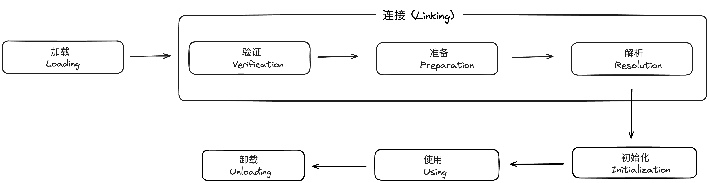
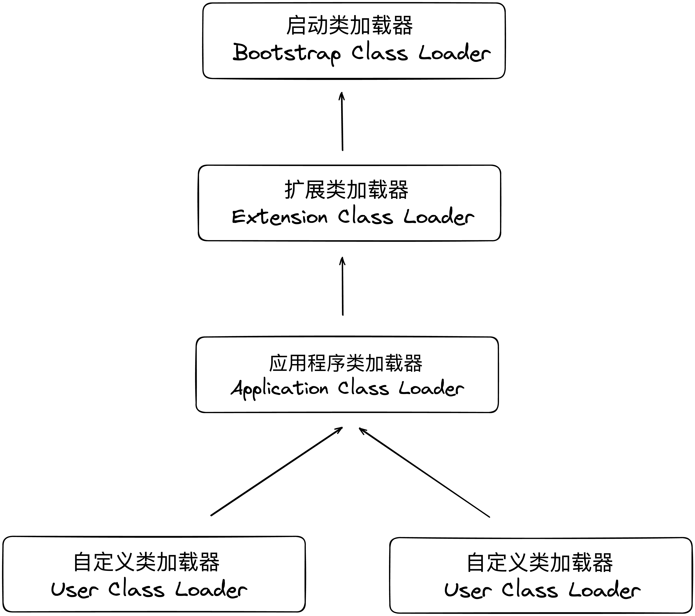
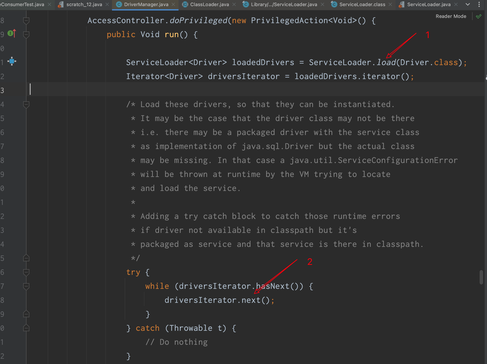
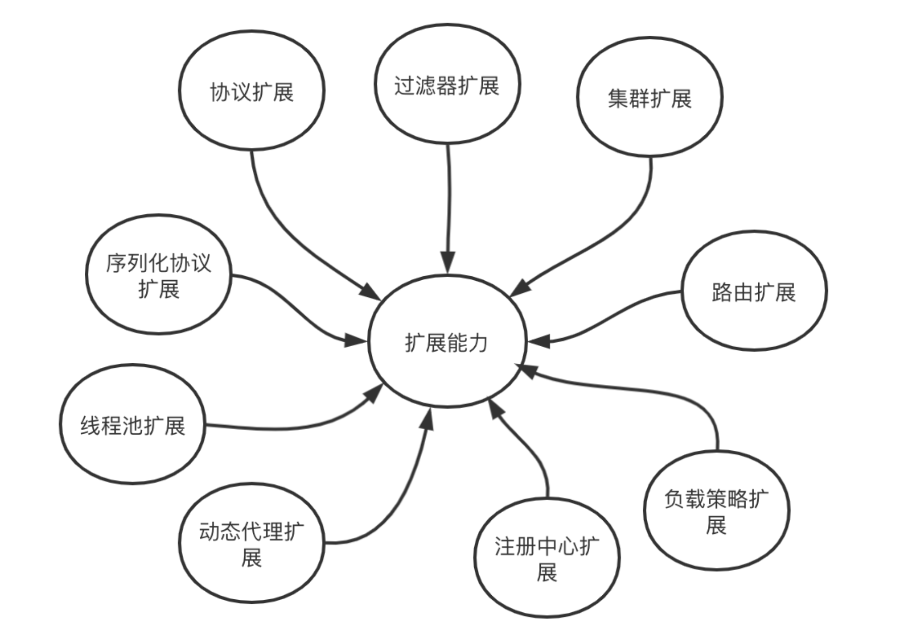
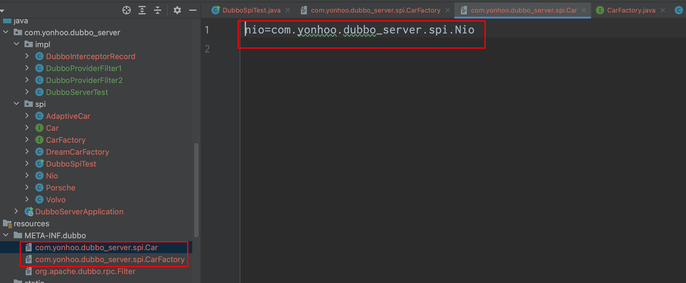
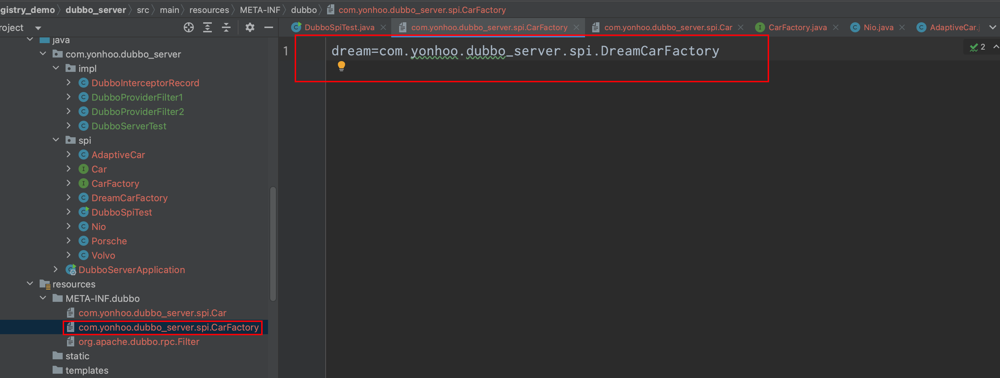
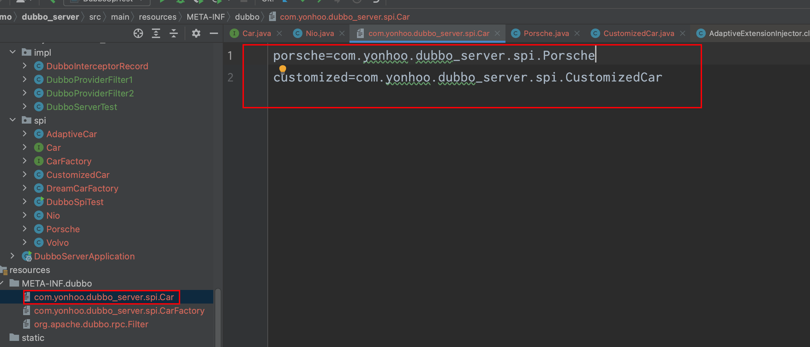

类加载机制
在编译成的Class文件最终都要加载到虚拟机中才能被运行和使用
一个类型从被加载到虚拟机内存中开始

对于初始化阶段
- 遇到new
、 、 ， ， ： - 使用new关键字实例化对象的时候
- 读取或设置一个类型的静态字段(被final修饰
， - 调用一个类型的静态方法
- 使用java.lang.reflect包的方法对类型进行反射调用的时候
， ， - 当初始化类的时候
， ， - 当虚拟机启动时
， （ ） ， - 当使用JDK7新加入的动态语言支持时
， 、 、 、 ， 。 - 当一个接口中定义了JDK8新加入的默认方法(被default关键字修饰的接口方法)时
， ，
下面给个例子说明初始化
public static void main(String[]args){
System.out.println(SuperClass.value);
}
public class SuperClass {
static {
System.out.println("SuperClass init!");
}
public static int value = 123;
}
public class SubClass extends SuperClass {
static {
System.out.println("SubClass init!");
}
}
output:
SuperClass init!
123
可以看到
这里列出所有初始化的情况
static {
Runtime.getRuntime().addShutdownHook(new Thread(new Runnable() {
@Override
public void run() {
if (logger.isInfoEnabled()) {
logger.info("Run shutdown hook now.");
}
ProtocolConfig.destroyAll();
}
}, "DubboShutdownHook"));
}
于是在本地测试
类加载器
Java虚拟机设计团队有意把类加载阶段中的
类加载器虽然只用于实现类的加载动作
public class ClassLoaderTest {
public static void main(String[] args) throws Exception {
ClassLoader myLoader = new ClassLoader() {
@Override
public Class<?> loadClass(String name) throws ClassNotFoundException {
try {
String fileName = name.substring(name.lastIndexOf(".") + 1)
+ ".class";
InputStream is = getClass().getResourceAsStream(fileName);
if (is == null) {
return super.loadClass(name);
}
byte[] b = new byte[is.available()];
is.read(b);
return defineClass(name, b, 0, b.length);
} catch (Exception e) {
throw new ClassNotFoundException(name);
}
}
};
Object obj = myLoader.loadClass("org.demo.test.ClassLoaderTest")
.newInstance();
System.out.println(obj.getClass());
System.out.println(obj instanceof org.demo.test.ClassLoaderTest);
}
}
运行结果
：
org.demo.test.ClassLoaderTest
false
可以看出虽然来自同一个文件
双亲委派模型
站在Java虚拟机的角度来看
本文讨论的是JDK8及之前版本的Java
- 启动类加载器
这个类加载器负责加载存放在<JAVA_HOME>\lib 目录
- 扩展类加载器
这个类加载器是在类sun.misc.Launcher$ExtClassLoader中以Java代码的形式实现的
- 应用程序类加载器
这个类加载器由sun.misc.Launcher$AppClassLoader来实现
JDK9之前的Java应用都是由这三种类加载器互相配合来完成加载的

图中展示的各种类加载器之间的层次关系被称为类加载器的
双亲委派模型的工作过程是
protected synchronized Class<?> loadClass(String name, boolean resolve)
throws ClassNotFoundException {
Class c = findLoadedClass(name);
if (c == null) {
try {
if (parent != null) {
c = parent.loadClass(name, false);
} else {
c = findBootstrapClassOrNull(name);
}
} catch (ClassNotFoundException e) {
}
if (c == null) {
c = findClass(name);
}
}
if (resolve) {
resolveClass(c);
}
return c;
}
破坏双亲委派模型
双亲委派模型并不是一个具有强制性约束的模型
双亲委派模型很好地解决了各个类加载器协作时基础类型的一致性问题(越基础的类由越上层的加载器进行加载)
下面浅析一下JDBC的加载过程
DriverManager会尝试加载在"jdbc.drivers"系统属性中引用的驱动程序类

- ServiceLoader会加载所有META-INF/services/实现Driver的class
- 迭代next()方法去加载实际的实现
其中迭代器的部分就是ServiceLoader的实现,调用Class.forName去加载类
private Class<?> nextProviderClass() {
String fullName;
if (this.configs == null) {
try {
fullName = "META-INF/services/" + ServiceLoader.this.service.getName();
if (ServiceLoader.this.loader == null) {
this.configs = ClassLoader.getSystemResources(fullName);
} else if (ServiceLoader.this.loader == ClassLoaders.platformClassLoader()) {
if (BootLoader.hasClassPath()) {
this.configs = BootLoader.findResources(fullName);
} else {
this.configs = Collections.emptyEnumeration();
}
} else {
this.configs = ServiceLoader.this.loader.getResources(fullName);
}
} catch (IOException var4) {
ServiceLoader.fail(ServiceLoader.this.service, "Error locating configuration files", var4);
}
}
while (this.pending == null || !this.pending.hasNext()) {
if (!this.configs.hasMoreElements()) {
return null;
}
this.pending = this.parse((URL) this.configs.nextElement());
}
fullName = (String) this.pending.next();
try {
return Class.forName(fullName, false, ServiceLoader.this.loader);
} catch (ClassNotFoundException var3) {
ServiceLoader.fail(ServiceLoader.this.service, "Provider " + fullName + " not found");
return null;
}
}
而在最开始调用ServiceLoader.load方法时
ServiceLoader<Driver> loadedDrivers = ServiceLoader.load(Driver.class);
public static <S> ServiceLoader<S> load(Class<S> service) {
ClassLoader cl = Thread.currentThread().getContextClassLoader();
return new ServiceLoader<>(Reflection.getCallerClass(), service, cl);
}
JDBC使用线程上下文类加载器去加载所需的SPI代码
实现过程
可以看到实现SPI
但是它不能按需加载
Dubbo SPI机制
可扩展性的优点主要表现模块之间解耦
用户能够基于 Dubbo 提供的扩展能力
- 按需加载
。 ， ， 。 - 增加扩展类的 IOC 能力
。 ， ， ， 。 - 增加扩展类的 AOP 能力
。 ， ， 。 - 具备动态选择扩展实现的能力
。 ， ， 。 - 可以对扩展实现进行排序
。 ， 。 - 提供扩展点的 Adaptive 能力
。 ， 。
Dubbo 实现的一些例如动态选择扩展实现
Dubbo 扩展能力使得 Dubbo 项目很方便的切分成一个一个的子模块

规范定义
- 接口名
： ， @SPI 注解修饰 - 提供者配置文件路径
： - META-INF/dubbo/internal
- META-INF/dubbo
- META-INF/services
- 提供者配置文件名称
： ， - 提供者配置文件内容
： key=value 形式， ， ， “ ” （ ） 。 。 - 提供者加载
： ， ， 。 - 增加了对扩展点 IoC 和 AOP 的支持
， ， 。
下面举个例子
@SPI
public interface Car {
String engineStart();
}
public class Porsche implements Car {
@Override
public String engineStart() {
System.out.println("Porsche start");
return "Porsche start";
}
}
public class Volvo implements Car {
@Override
public String engineStart() {
System.out.println("Volvo start");
return "Volvo start";
}
}
在META-INF/dubbo下面添加两行
porsche=com.yonhoo.dubbo_server.spi.Porsche
volvo=com.yonhoo.dubbo_server.spi.Volvo
public class DubboSpiTest {
public static void main(String[] args) {
ExtensionLoader<Car> loader = ExtensionLoader.getExtensionLoader(Car.class);
Car alipay = loader.getExtension("volvo");
System.out.println(alipay.engineStart());
}
}
output :
Volvo start
Volvo start
自适应机制Adaptive
Adaptive 机制
@Adaptive 修饰方法
被@Adapative修饰的 SPI 接口中的方法称为Adaptive方法
package <SPI 接口所在包>;
public class SPI 接口名$Adpative implements SPI 接口 {
public adaptiveMethod (arg0, arg1, ...) {
// 注意<span class="bd-box"><h-char class="bd bd-beg"><h-inner>，</h-inner></h-char></span>下面的判断仅对 URL 类型<span class="bd-box"><h-char class="bd bd-beg"><h-inner>，</h-inner></h-char></span>或可以获取到 URL 类型值的参数进行判断
// 例如<span class="bd-box"><h-char class="bd bd-beg"><h-inner>，</h-inner></h-char></span> dubbo 的 Invoker 类型中就包含有 URL 属性
if(arg1==null) throw new IllegalArgumentException(异常信息)<span class="bd-box"><h-char class="bd bd-beg"><h-inner>；</h-inner></h-char></span>
if(arg1.getUrl()==null) throw new IllegalArgumentException(异常信息)<span class="bd-box"><h-char class="bd bd-beg"><h-inner>；</h-inner></h-char></span>
URL url = arg1.getUrl();
// 其会根据@Adaptive 注解上声明的 Key 的顺序<span class="bd-box"><h-char class="bd bd-beg"><h-inner>，</h-inner></h-char></span>从 URL 获取 Value<span class="bd-box"><h-char class="bd bd-beg"><h-inner>，</h-inner></h-char></span>
// 作为实际扩展类<span class="bd-box"><h-char class="bd bd-beg"><h-inner>。</h-inner></h-char></span>若有默认扩展类<span class="bd-box"><h-char class="bd bd-beg"><h-inner>，</h-inner></h-char></span>则获取默认扩展类名<span class="bd-box"><h-char class="bd bd-beg"><h-inner>；</h-inner></h-char></span>否则获取
// 指定扩展名名<span class="bd-box"><h-char class="bd bd-beg"><h-inner>。</h-inner></h-char></span>
String extName = url.get 接口名() == null?默认扩展前辍名:url.get 接口名();
if(extName==null) throw new IllegalStateException(异常信息);
SPI 接口 extension = ExtensionLoader.getExtensionLoader(SPI 接口.class)
.getExtension(extName);
return extension. adaptiveMethod(arg0, arg1, ...);
}
public unAdaptiveMethod( arg0, arg1, ...) {
throw new UnsupportedOperationException(异常信息);
}
}
举个例子
@SPI
public interface Car {
String engineStart();
@Adaptive
void type(URL url);
}
public class Porsche implements Car {
@Override
public String engineStart() {
System.out.println("Porsche start");
return "Porsche start";
}
@Override
public void type(URL url) {
System.out.println("Porsche");
}
}
public class Volvo implements Car {
@Override
public String engineStart() {
System.out.println("Volvo start");
return "Volvo start";
}
@Override
public void type(URL url) {
System.out.println("Volvo");
}
}
public static void main(String[] args) {
ExtensionLoader<Car> loader = ExtensionLoader.getExtensionLoader(Car.class);
Car car = loader.getAdaptiveExtension();
URL url = URL.valueOf("dubbo://localhost:20880?car=volvo");
car.type(url);
}
output :
Volvo start
@Adaptive 修饰类
@SPI("volvo")
public interface Car {
String engineStart();
}
public class Porsche implements Car {
@Override
public String engineStart() {
System.out.println("Porsche start");
return "Porsche start";
}
}
public class Volvo implements Car {
@Override
public String engineStart() {
System.out.println("Volvo start");
return "Volvo start";
}
}
@Adaptive
public class AdaptiveCar implements Car {
private String type;
public void setType(String type) {
this.type = type;
}
@Override
public String engineStart() {
ExtensionLoader<Car> loader = ExtensionLoader.getExtensionLoader(Car.class);
Car car;
if (Strings.isBlank(type)) {
car = loader.getDefaultExtension();
} else {
car = loader.getExtension(type);
}
return car.engineStart();
}
}
public class DubboSpiTest {
public static void main(String[] args) {
ExtensionLoader<Car> loader = ExtensionLoader.getExtensionLoader(Car.class);
Car car = loader.getAdaptiveExtension();
car.engineStart();
((AdaptiveCar) car).setType("porsche");
car.engineStart();
System.out.println(loader.getSupportedExtensions());
}
}
output :
Volvo start
Porsche start
[porsche, volvo]
下面看Dubbo是如何通过Adaptive实现SPI的IOC
@SPI
public interface Car {
String engineStart();
}
@SPI
public interface CarFactory {
void goingForADrive();
}
@Adaptive
public class Nio implements Car {
@Override
public String engineStart() {
System.out.println("Nio start");
return "Nio start";
}
}
public class DreamCarFactory implements CarFactory {
private Car nio;
@Override
public void goingForADrive() {
System.out.println("start");
if (nio != null) {
nio.engineStart();
}
System.out.println("end");
}
public void setCar(Car nio) {
this.nio = nio;
}
}
public class DubboSpiTest {
public static void main(String[] args) {
ExtensionLoader<CarFactory> extensionLoader = ExtensionLoader.getExtensionLoader(CarFactory.class);
CarFactory dream = extensionLoader.getExtension("dream");
dream.goingForADrive();
}
}


output:
start
Nio start
end
简单描述一下源码,injectExtension会在createExtension中为依赖的其他对象进行注入
private T injectExtension(T instance) {
if (this.injector == null) {
return instance;
} else {
try {
Method[] var2 = instance.getClass().getMethods();
int var3 = var2.length;
for(int var4 = 0; var4 < var3; ++var4) {
Method method = var2[var4];
if (this.isSetter(method) && !method.isAnnotationPresent(DisableInject.class) && method.getDeclaringClass() != ScopeModelAware.class && (!(instance instanceof ScopeModelAware) && !(instance instanceof ExtensionAccessorAware) || !ignoredInjectMethodsDesc.contains(ReflectUtils.getDesc(method)))) {
Class<?> pt = method.getParameterTypes()[0];
if (!ReflectUtils.isPrimitives(pt)) {
try {
String property = this.getSetterProperty(method);
Object object = this.injector.getInstance(pt, property);
if (object != null) {
method.invoke(instance, object);
}
} catch (Exception var9) {
logger.error("0-15", "", "", "Failed to inject via method " + method.getName() + " of interface " + this.type.getName() + ": " + var9.getMessage(), var9);
}
}
}
}
} catch (Exception var10) {
logger.error("0-15", "", "", var10.getMessage(), var10);
}
return instance;
}
}
this.injector.getInstance(pt, property); 会将这遍历ScopeBeanExtensionInjector
这里重点说一下SpiExtensionInjector
public <T> T getInstance(final Class<T> type, final String name) {
if (type.isInterface() && type.isAnnotationPresent(SPI.class)) {
ExtensionLoader<T> loader = this.extensionAccessor.getExtensionLoader(type);
if (loader == null) {
return null;
} else {
return !loader.getSupportedExtensions().isEmpty() ? loader.getAdaptiveExtension() : null;
}
} else {
return null;
}
}
它会将set方法,这里demo中的是setCa
包装机制 Wrapper
Wrapper通过实现interface
@SPI
public interface Car {
String engineStart();
}
public class Porsche implements Car {
@Override
public String engineStart() {
System.out.println("Porsche start");
return "Porsche start";
}
}
public class CustomizedCar implements Car {
private Car car;
public CustomizedCar(Car car) {
this.car = car;
}
@Override
public String engineStart() {
System.out.println("begin customized");
String result = car.engineStart();
System.out.println("end customized");
return result;
}
}
public class DubboSpiTest {
public static void main(String[] args) {
ExtensionLoader<Car> loader = ExtensionLoader.getExtensionLoader(Car.class);
Car car = loader.getExtension("porsche");
car.engineStart();
}
}

output:
begin customized
Porsche start
end customized
激活机制 Activate
@Documented
@Retention(RetentionPolicy.RUNTIME)
@Target({ElementType.TYPE, ElementType.METHOD})
public @interface Activate {
String[] group() default {};
String[] value() default {};
/** @deprecated */
@Deprecated
String[] before() default {};
/** @deprecated */
@Deprecated
String[] after() default {};
int order() default 0;
}
@Activate 有三个还在使用的field
- group
为扩展类指定所属的组别 - value
为当前扩展类指定key， ， ， - order
给当前扩展类设定优先级
具体例子就不再详解
可以看到Dubbo的SPI机制有很多可定制化的扩展
reference